Attribute Selector
UX
DataQuest allows users to navigate normalised data from different data vendors and understand the relation between several data points.
Objectives
Allow users to start navigating any data category, and drill up or down the data.In DataQuest, an application within this data cloud based solution - users can navigate the normalised data and understand the relationships between several data points. It will also give users access to different normalised data sources, effectively allowing them to compare data between data vendors.
Tools used: Figma
Year: 2023
Live Prototype: http bla bla
Example of the problem
This is an example, but within DataQuest, we will have thousands of companies, with thousands of products and hundreds of markets - basically a massive database in the form of a Graphical User Interface - so you can query the data as you see fit.
I want to find a company, let’s say Apple. Apple sells several products (iPhone, iPad, AirPods, etc) to different markets. The way they can navigate the data can change.
- Users might want to start looking for a company and than see what products that company sells.
- Start looking at the data from a market view point - starting with the country where a company is selling and see what products from that company are available within a certain market.
- start looking from a product view point and view in what markets that product is selling.
Because this data is also normalised from different sources, I might want to see what different data vendors have to say the specifications of the same product.
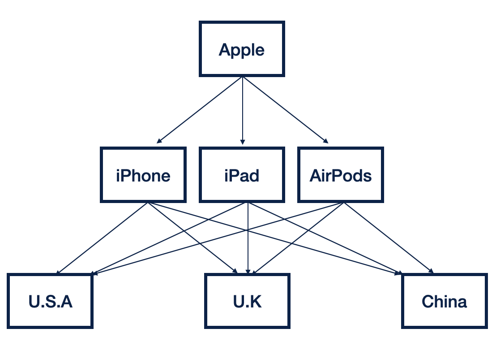
Table representation of the problem
Below, a visual representation of how it would look like a flat table with all the instances of the same attribute. Displaying the attributes like this would make finding and serching specific attributes uncessarily complex.
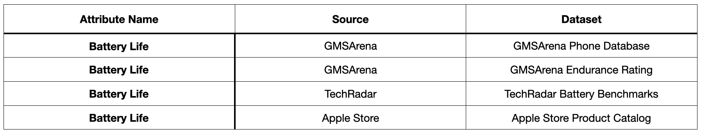
User Journey Diagram
Below the user Journey Diagram - Attribute Lists and Datasets not included as part of this project.

Attribute with only one source and belonging to a single dataset
The solution
The solution was to 'compress' all attribute instances under one row. So, the user first selects which attribute they want (battery Life).
Choosing the data source and dataset
Once the user selects an attribute to their 'basket', they can choose the source. If there is only one source, the field is read only.
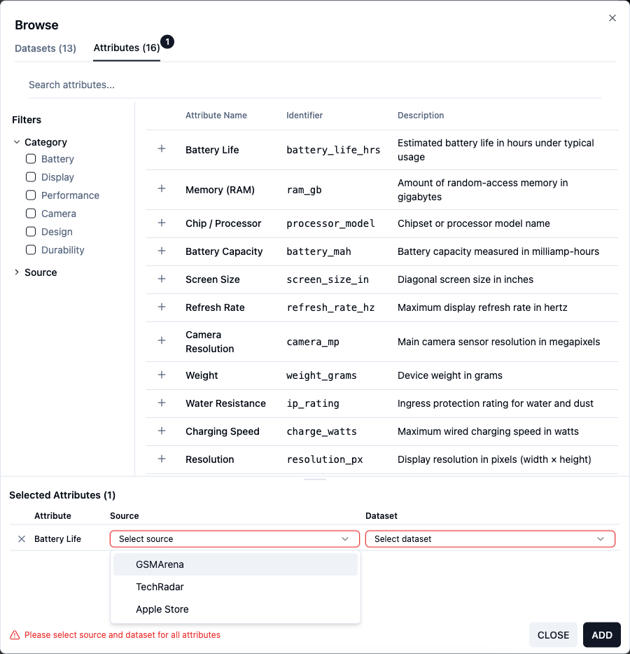
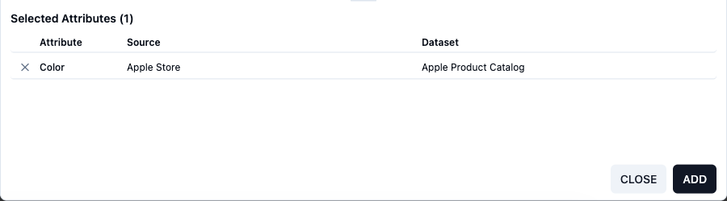
Attribute with only one source and belonging to a single dataset
Attribute Instance Management
The user can add to the 'basket' as many instances of the attribute as available. So, the attribute will also remain on the top section if there are more instances of it. This is also, why there is no use of checkboxes to select the attributes.
In the first example below, the user added 2 instance of the attribute to their basket - the attribute is still available at the top, as it exists in more datasources and datasets.
On the second example, as there is only one instance of the attribute available, as soon as the user adds it to the 'basket', it disappears from the top section
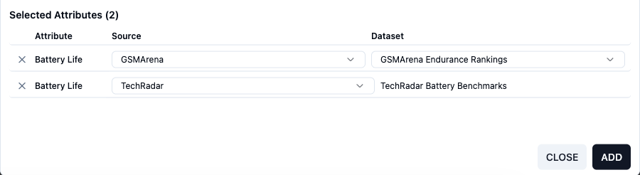
Two instances of the same attribute selected - more instances available to select at the top
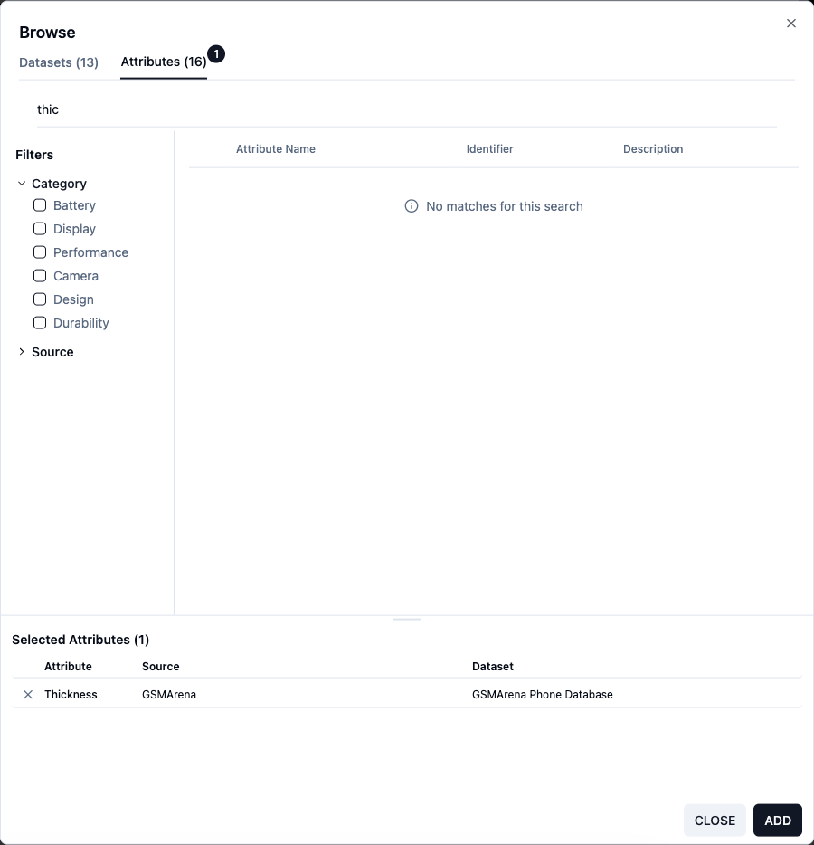
As there is only one instance, as soon as the user add it to the 'basket' - it disappears from the available attributes to select.
'Basket' Management
As the user can select a lot of attributes, and resolve those attributes to datasources and datasets, they need space at the bottom. For this, they can resize the bottom/top part. This allows to maximise the space when they are searching for attributes to add, but also maximise it when they need to resolve the attributes.
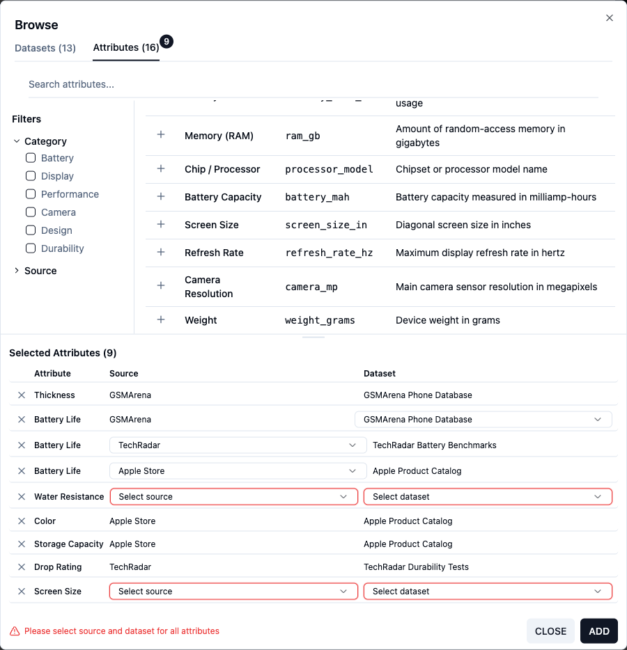
Error Handling
Attributes that need to be resolved in the 'basket', have the cells highlighted red by default - as well as an indication at the bottom bar that these need to be resolved. This indication is accompanied by an icon - to account for colour blind people.
If the user clicks on the 'Add' button while still having attributes to resolve, the first row to resolve will become highligted - with also an autoscroll implemented which takes to the user to the next attribute that needs resolving.
If the user wants to add the attributes, they would need to resolve all attributes, or delete the ones that are unresolved.
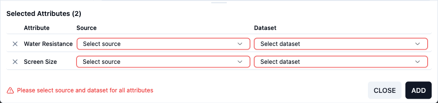
Default state for rows that still need to be resolved.
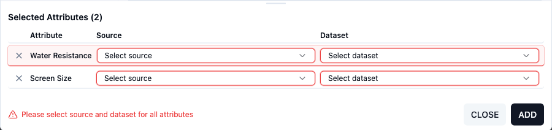
Now that the first error is resolved - if the user clicks "add" again, the second error will be highlighted.
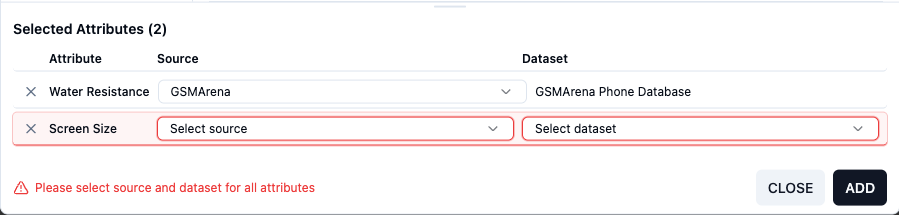
If the user clicks on 'Add', the first row that needs to be resolved will be highlited and selected, and the screen will autoscroll so the user can see it.
Bulk Select to add or remove
This functionality allows user to select several attributes, consecutive or not, at the same time by using their keyboard (shift+select the first and the last attribute in a consecutive list or alt + select non consecutive attributes). Once the attributes are selected the user can click on the '+' or 'x' on any row to add or rmeove the selection.
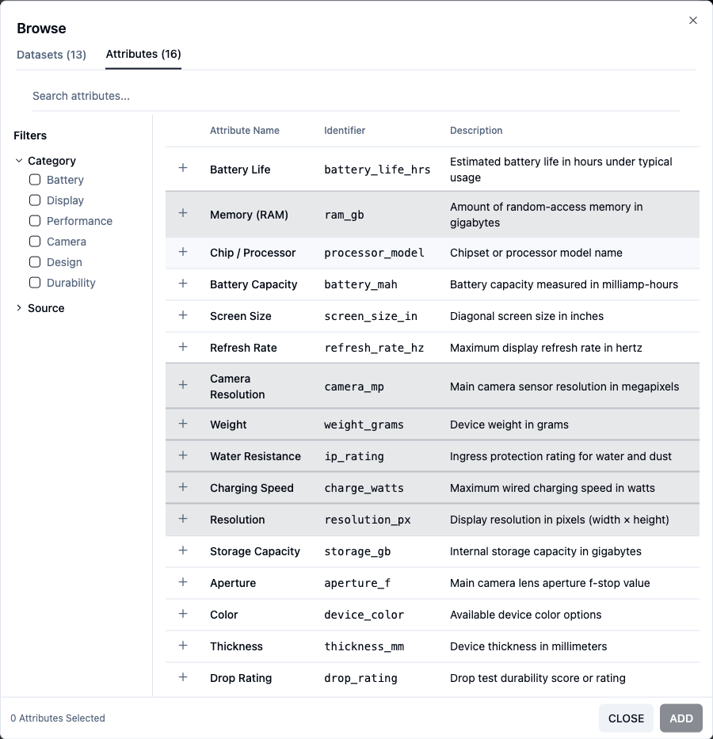
Several attributes selected to be added to the 'basket'
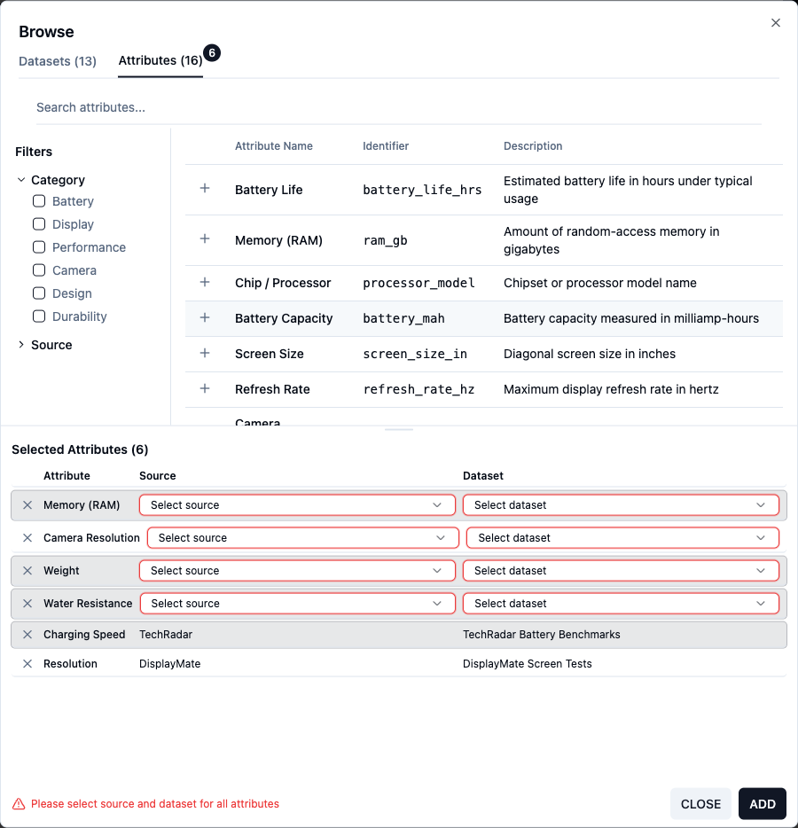
Several attributes selected to be removed from the 'basket'
What's Next?
- After this functionality was implemented, and user research, users still need more space for this functionality. So this modal will be replaced by a drawer - to maximise screensize.
- Implementing cell errors (with an icon), instead of realying in colour - to make sure it's accessible and in accordance to WCAG guidelines.
- Allow the users to select whole datasets or existing attribute lists.
- If it's an existing attribute list - do the attributes selected already exist in the attribute list?
Design Decisions
No Checkboxes
Checkboxes could be confusing as there are multiple instances of the same attribute. It would only work if the attributes were flatten, displaying the data source and dataset. This would raise the original problem again, loads of attributes for the user to find.
Bulk Selection
This is to make it easier for users to select a bunch of attributes - vary valuable in the basket, if the user is faced with several sources and datasets to select, and they don't want to proceed with those and just want to delete them.
It will also be a valuabe function when the datasets and attribute lists are available - if they only want a few of the attributes within the dataset.
Placement of the '+' and delete
Normally the placement of these type of buttons is on the right, to allow the user to the row first and then add or delete as appropriate. However, after user feedback the placement of the buttons changed to accomodate for large screens, where the user reads the row but doesn't want to have to move the cursos all along to the other end of the screen.